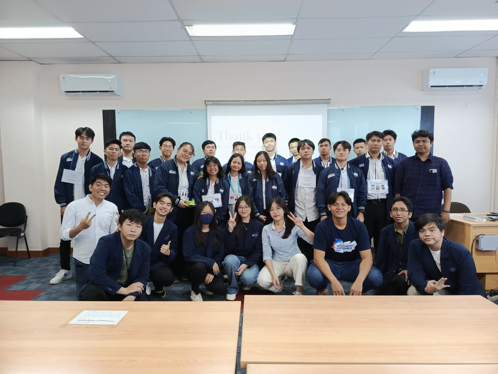

👨💻 My Journey
I’m a Data Science student at Bunda Mulia University, deeply interested in how we can extract meaning from language using machine learning. My journey began in high school while exploring network engineering, where I became curious about data and its patterns.
🚀 Motivation & Vision
Data isn’t just numbers — it’s stories waiting to be told. My passion lies in uncovering those stories, especially in human language. I envision myself becoming a data analyst who bridges insights with decision-makers in meaningful ways.
📚 Organizational Involvement
- President – Data Science Organization, UBM (2 terms) 
🎯 Interests & Personality
Besides data, I enjoy exploring new tech tools, journaling, and collaborating in team-driven environments. I value curiosity, empathy, and clarity in communication.